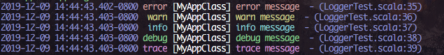
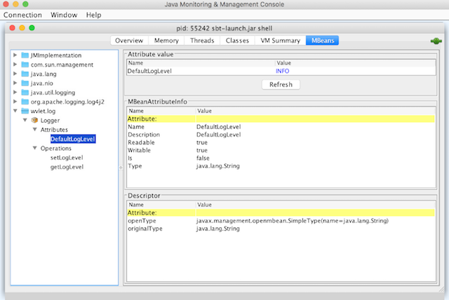

airframe-log: Application Logger
airframe-log is a library for enhancing your Scala application logging with colors and source code locations.

airframe-log also supports Scala.js to see the logs in the debug window of web browsers:

- GitHub: airframe-log
- Blog post: Airframe Log: A Modern Logging Library for Scala

libraryDependencies += "org.wvlet.airframe" %% "airframe-log" % "(version)"
// For Scala.js (Since airframe-log 1.2)
libraryDependencies += "org.wvlet.airframe" %%% "airframe-log" % "(version)"
Features
- Simple to use
- You can start logging by adding
wvlet.log.LogSupporttrait to your code. No need to writeLogger.getLogger(xxx)anymore.
- You can start logging by adding
- Fast and light-weight
- airframe-log uses Scala macros for efficiency; log messages will be instantiated only when the log level is effective.
- airframe-log is just an extension of JVM's built-in
java.util.logging. So no need exists to add custom binding jars, such as logback-classic as in slf4j.
- Informative
- ANSI colored logging support.
- You can also show the source code locations (line number and pos) of log messages.
- Fully customizable
- log levels can be changed at ease with the periodic log-level scanner.
- You can also change the log level through the standard JMX interface for
java.util.logging. - Easy to customize your own log format and log levels inside the code. No external XML configuration is required.
- Production ready
- airframe-log has built-in handlers for log file rotations, asynchronous logging.
- Scala 2.12, 2.13, Scala.js support
Using LogSupport trait
The most convenient way to use airframe-log is adding LogSupport to your class:
import wvlet.log.LogSupport
object MyApp extends LogSupport {
info("info log")
debug("debug log")
}
The logger name will be determined from your class name (e.g., MyApp).
Alternatively you can load Logger instance manually:
import wvlet.log.Logger
class YourApp {
private val logger = Logger.of[YourApp]
}
Using the default configuration
If your project involves dependencies that set their own java.util.logging configurations,
you can force using the default configuration of airframe-log by calling Logger.init:
import wvlet.log.Logger
// Initialize with INFO level and SourceCodeLogFormatter
Logger.init
// For terminals not supporting ANSI colors
wvlet.airframe.log.initNoColor
Configuring log levels
To configure log levels, use Logger.setDefaultLogLevel(...) or Logger.setLogLevel(...):
// Set the root logger's log level
Logger.setDefaultLogLevel(LogLevel.DEBUG)
// Configure log level for each package or logger
Logger("(your logger package or name)").setLogLevel(LogLevel.DEBUG)
(Note: The scheduled log level scan is not available in Scala.js)
If Logger.scheduleLogLevelScan is called, airframe-log periodically scans log-level properties file (default every 1 minute) to configure logger levels:
import wvlet.log.Logger
## Scan log files (not available for Scala.js)
Logger.scheduleLogLevelScan
log.properties example:
# You can use all, trace, debug, info, warn, error, info, all as log level
wvlet.airframe=debug
org.eclipse.jetty=info
org.apache.http=info
com.amazonaws=info
The format follows Java Properties file format.
In default, loglevel file will be found in this order:
log-test.propertiesin the classpath.- If 1. is not found, use
log.propertiesin the classpath.
To change the log file path, you can use Logger.scheduleLogLevelScan(file paths, duration).
In debugging your application, create src/test/resources/log-test.properties file, and
call Logger.scheduleLogLevelScan before running test cases. This is useful for quickly checking the log messages.
Using LoglevelScanner with ScalaTest
To scan log level properties periodically with ScalaTest, define the base trait as follows:
import org.scalatest.{BeforeAndAfter, BeforeAndAfterAll, WordSpec, _}
import wvlet.log.LogFormatter.SourceCodeLogFormatter
trait Spec extends WordSpec with Matchers with BeforeAndAfterAll with LogSupport {
// Set the default log formatter
Logger.setDefaultFormatter(SourceCodeLogFormatter)
override protected def beforeAll(): Unit = {
// Run LogLevel scanner (log-test.properties or log.properties in classpath) every 1 minute
Logger.scheduleLogLevelScan
super.beforeAll()
}
override protected def afterAll(): Unit = {
Logger.stopScheduledLogLevelScan
super.afterAll()
}
}
class YourSpec extends Spec {
"my application" should {
"run correctly" in {
// show a log message
debug("this is debug log")
}
}
}
Customizing log format
You can show the source code location where the log message is generated:
import wvlet.log._
object MyApp with LogSupport {
Logger.setDefaultFormatter(LogFormatter.SourceCodeLogFormatter)
info("log with source code")
}
This code will show:
[MyApp$] log with source code - (MyApp.scala:6)
Pre-defined log formatters:
Here is the list of pre-defined log formatters.
- SourceCodeLogFormatter (with source code location)
- PlainSourceCodeLogFormatter (with source code location without ANSI coloring)
- AppLogFormatter (without source code location)
- TSVLogFormatter (logging in TSV format)
- IntelliJLogFormatter (for debugging using IntelliJ console)
- SimpleLogFormatter (just logger name and log message)
- BareFormatter (shows only log message)
Customising LogFormatter
You can also define your own LogFormatter:
import wvlet.log.LogFormatter._
object CustomLogFormatter extends LogFormatter {
override def formatLog(r: LogRecord): String = {
val log = s"[${highlightLog(r.level, r.leafLoggerName)}] ${highlightLog(r.level, r.getMessage)}"
appendStackTrace(log, r)
}
}
Logger.setDefaultFormatter(CustomLogFormatter)
See also the examples in LogFormat.scala:
Using airframe-log in Scala.js
import wvlet.log._
// This configuration becomes unnecessary since 0.43
//Logger.setDefaultHandler(new JSConsoleLogHandler)
class YourAppClass extends LogSupport {
info("hello")
}
The log message will be showin in your browser's developer console.
To configure the log level, use wvlet.log.setDefaultLogLevel or wvlet.log.setLogLevel:
> wvlet.log.setDefaultLogLevel("debug")
> wvlet.log.setLogLevel("your.logger.name", "trace")
Using with slf4j
If you are using slf4j, just add slf4j-jdk14 to your dependency. The log messages from slf4j will be sent to airframe-log:
libraryDependencies += "org.slf4j" % "slf4j-jdk14" % "1.7.21"
- See also the article, How to start using wvlet-log with slf4j projects, written by @seratch (author of skinny-framework, scalikejdbc, etc.)
Using with log4j
For example, the default logger of Hadoop and Spark is log4j. You can send logs from airframe-log to log4j by adding log4j-jul binder:
libraryDependencies += "org.apache.logging.log4j" % "log4j-jul" % "2.6.1",
Writing and rotating logs with files
To write and rotate your logs, use LogRotationHandler:
logger.resetHandler(new LogRotationHandler(
fileName = "your-app.log",
maxNumberOfFiles = 100, // rotate up to 100 log files
maxSizeInBytes = 100 * 1024 * 1024 // 100MB
AppLogFormatter // Any log formatter you like
))
If you simply need to output logs to a single file without any rotation, use FileHandler:
logger.resetHandler(new FileHandler(
fileName = "your-app.log", // Log file name
formatter = AppLogFormatter // Any log formatter you like
))
Asynchronous logging
If you know your LogHandler is a heavy process (e.g., writing to network or slow disks), you can use
AsyncHandler to do the logging in a background thread:
val asyncHandler = new AsyncHandler(a heavy parent log handler)
try {
logger.resetHandler(asyncHandler)
}
finally {
asyncHandler.close // To flush unwritten log messages
}
Note that however AsyncHandler has usually higher overhead than the default handler since the asynchronous process involves locking and signal calls. We recommend to use AsyncHandler only if you know the overhead of the log writing is considerably high. LogRotationHandler is already optimized for writing logs to files, so you usually don't need to use AsyncHandler with LogRotationHandler.
Clear Existing Logger Configurations
To remove all previous configurations of the logger (e.g., configurations set by third-party libraries), use:
Logger.clearAllHandlers
// Then set your logger configurations
Logger.setDefaultFormatter(LogFormatter.SourceCodeLogFormatter)
Changing Log Levels using JMX
To change the log levels outside the JVM process, you can use the JMX interface of wvlet.log.Logger.
For example, by using jconsole you can access the JMX interface and change the log levels: 
Internals
Scala macro based logging code generation
airframe-log is efficient since it generate the log message objects only when necessary. For example, this logging code:
debug(s"heavy debug log generation ${obj.toString}")
will be translated into the following efficient one with Scala macros:
if(logger.isDebugEnabled) {
debug(s"heavy debug log generation ${obj.toString}")
}
Log message String generation will not happen unless the debug log is effective. Scala macro is also used for finding source code location (LogSource).
To disable Logging at compile-time
It is possible to disable the code generation of log statements at compile time.
Add scalacOptions += "-Xmacro-settings:wvlet.log.disable.[SUPPRESS_BELOW]" compiler option to build.sbt:
SUPPRESS_BELOW = {`ALL` ||`ERROR` || `WARN` || `INFO` || `DEBUG`}:
e.g. scalacOptions += "-Xmacro-settings:wvlet.log.disable.INFO" will suppress DEBUG, TRACE and INFO level log code generation.
Note that ALL is just an alias for ERROR which will disable all logging.
Why it uses java.util.logging instead of slf4j?
slf4j is just an API for logging string messages, so there is no way to configure the log levels and log format within your program. To use slf4j, you always need to include an slf4j binding library, such as logback-classic. slf4j's logging configuration is binder-specific (e.g., slf4j-simple, logback-classic, etc.), and your application always need to include a dependency to one of the slf4j implementations. There is nothing wrong in it if these slf4j bindings are used properly, but third-party libraries often include slf4j bindings as dependencies, and cause unexpected logging behaviour.
java.util.logging is a standard API of Java and no binding library is required, but configuring java.util.logging was still difficult and error prone (See an example in Stack Overflow)
airframe-log makes things easier for Scala developers.
Related Projects
scala-logging: An wrapper of slf4j for Scala. This also uses Scala macros to make logging efficient. No built-in source code location format, and you still need some slf4j bindings and its configuration.
twitter/util-logging: This is also an wrapper of
java.util.loggingfor Scala, but it doesn't use Scala macros, so you need to use an old sprintf style log generation, orifDebug(log)method to avoid expensive log message generation.scribe: A pure-scala logger implementation, which has a similar set of functionality with airframe-log (e.g., macro based code generation, programmatically configurable). As of June 2018, scribe doesn't support runtime log level configurations via JMX nor log.properties file.